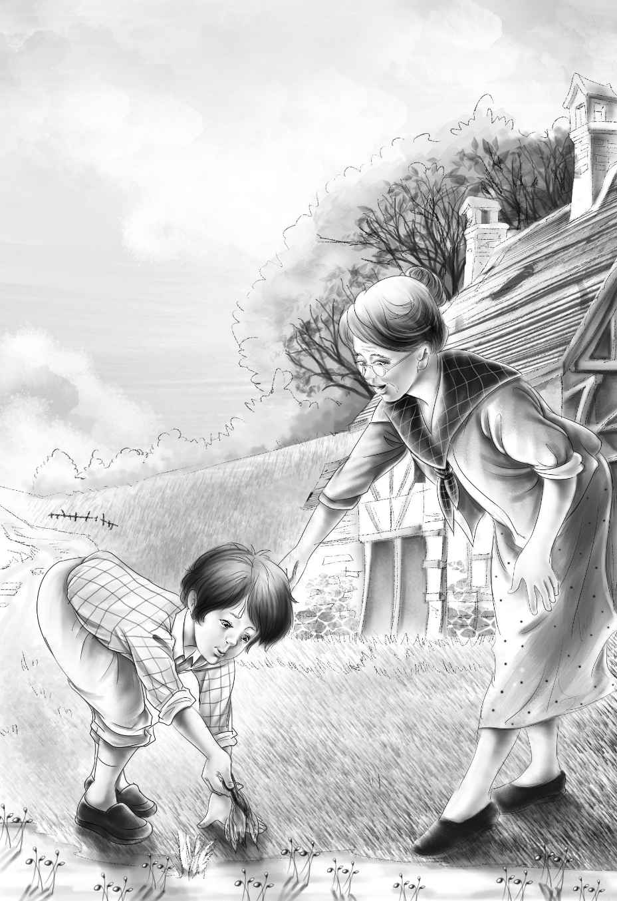

The next morning Jessie and Henry talked about the queer noise．They did not tell Violet and Benny．
“What do you think it was？” asked Jessie．“Do you think it was a rabbit？”
“I don’t know，” said Henry．“But I think someone was in the woods．I am glad we weren’t hurt．Someone must have stepped on a stick and made it crack．”
“What shall we do？” asked Jessie．
“Nothing，” said Henry．“Watch is a good watchdog．He loves us now， and if anyone tried to hurt us， Watch would take care of us．He would do more than growl．But after this， we must not let Benny go into the woods alone．”
“I’ll keep Benny and Violet with me all the time，” said Jessie．
“Good！” said Henry．“And keep Watch with you all the time， too．
“Good morning， Benny．Time to get up．Today you must build something for me out of stones．”
“What is it？” asked Benny eagerly．
“I’m not going to tell you，” said Henry， laughing．
“You build it just as Jessie tells you， and you will see．”
Henry was so eager to begin work that he ran all the way to town．The doctor came to the door and smilingly looked him over from head to foot．
“My mother will tell you what to do today，” the doctor said．“She wants you to work in her garden．”
Mrs．Moore， the doctor’s mother， had a sweet face and looked very kind．
“Good morning， Henry，” she said．“Do you know how to thin out vegetables？”
“Oh， yes，” said Henry．“I like to work in a vegetable garden．”
“I haven’t had much time to take care of my garden，” Mrs．Moore said．“There！ See that？”
She pulled out a carrot．It had to come out， for it was much too near the other carrots．
“Yes， I see，” said Henry．
He began to thin out the carrots．Mrs．Moore watched him as he pulled out some of the little carrots and put them in a pile．He left the other carrots to grow．Then he began on the turnips．

“You are a good worker，” said Mrs．Moore．“I can see that．” She smiled at Henry．“You may thin out all these vegetables．”
Then she went into the house and left Henry alone．He worked all the morning．He thinned out the carrots， turnips， and little onions．
The mill bells rang at noon， but Henry did not hear them．He still worked on in the hot sun．Then he saw Mrs．Moore looking at him．
“You have worked long enough now，” she said．“You may come again this afternoon．”
“What shall I do with the vegetables I pulled up？” Henry asked．
“Oh， I don’t want them，” said Mrs．Moore．“Just leave them in a pile．”
“Do you mind if I take them？” asked Henry．
“No， indeed．Do you have chickens？” Then， without waiting for an answer， she went right on， “You have done good work．Here is a dollar．”
Henry said， “Thank you，” and was glad he did not have to answer about the chickens．
When Mrs．Moore went into the house， he took some of the little carrots and turnips and onions．If he had looked up， he would have seen Mrs．Moore in the window watching him．But he did not look up．He was too eager to get to the store and order some meat．
When he arrived at the boxcar， Benny told him， “The building is done．I helped with it．”
The “building” was a fireplace， made of flat stones．
“Benny did a lot of the work，” said Jessie．“He carried stones and found wood for the fire．”
The fireplace was a very good one．The children and Watch had made a hole at the foot of a big rock between two trees．Flat stones were laid on the floor of this hole and around the sides．More big stones were put up to keep out the wind．
Jessie had found a heavy wire in the dump and had put the big kettle on it and tied the ends of the wire to the two trees．The kettle hung over the fireplace， and the fire was laid．Beside the fireplace was a big wood-pile．
“Fine！ Fine！” cried Henry．“You have done well．Now see what I have．”
The girls were delighted with the meat and the little vegetables．With Henry’s knife they cut the meat into little pieces．Then they filled the kettle with water from the fountain and put the meat into it， with a tin plate for a cover．Henry started the fire， and it burned well at once．
Jessie cut the tops off the vegetables and washed them in the brook．
“I’ll put them in after the meat has cooked awhile，” she said．
Soon the water began to boil， and the stew began to smell good．Watch sat down and looked at it．He sniffed hungrily at it and barked and barked．
The children sat around the fireplace， eating bread and milk．Now and then Jessie stirred the stew with a big spoon．
“It will make a good meal，” said Henry．“Keep it boiling and do not leave it．When I come home tonight， I’ll bring you some salt．And whatever you do， don’t get on fire！”
Violet pointed to the pitcher and teapot that she had filled with water．
“That’s to put on Benny or Watch if he should get on fire，” she said．
Henry laughed and went happily on his way．He wished he could stay and smell the stew boiling， but he thought he ought to work．So he went back to Dr．Moore’s house．
He was very happy when Dr．Moore said， “Do you want to clean up this garage？”
The garage was not in very good order．Dr．Moore laughed when he saw Henry look around for a broom．
“I must go out now，” said Dr．Moore．“You just clean this place up．”
Henry began at once．First he opened all the boxes．On the biggest box he painted the word TOOLS with a long-handled brush and a can of paint he had found．On another box he painted NAILS．Then he picked over the things and put the tools in the toolbox and the nails in the nail-box．This was fun for Henry， because he liked to get things in order．
Henry found a lot of nails that were bent and covered with rust．He put them in his pocket．
“I’ll ask the doctor for these bent nails，” he said to himself ．“They are no good to him， but they are fine for me．I can use every old nail I get．”
Then he washed the floor and washed his paint brush．
When Dr．Moore came home， he found Henry putting brushes， paint cans， and other things on the shelf．
“My， my， my！” he cried．He looked at the garage and laughed and laughed．He laughed until his mother came out to see what he was laughing at．
“Look， Mother！” he said．“Look at those tools．Look at the shelf．Look at my hammers．One， two， three， four hammers．Your hammer， my hammer， and two other hammers．They were all lost．Can you use a hammer， Henry？”
“Yes， indeed I can！” cried Henry．
“Take one，” said Dr．Moore．“You found them all．”
“Oh， thank you！” said Henry．He showed the doctor the bent nails and was told that he could have those， too．He could hardly wait now to start home， because he was so eager to show Benny and his sisters his new hammer and nails．
“Tomorrow will be Sunday，” said Dr．Moore．“Will you come again the next day？”
“Oh， yes，” replied Henry， who had lost all track of the days．
“The cherries must be picked，” said the doctor．He looked at Henry in a queer way．“We could use any number of cherry pickers if they were all as careful as you．”
“Could you？” asked Henry eagerly．“Well， I’ll come．”
So the three said good-by， and Henry started for home．He had another dollar， a pocket full of old nails， a hammer， and the pile of vegetables that he had left at noon．On the way home he bought some salt．
When he arrived at the boxcar， he began to smell a delicious smell．
“Onions！” he shouted， running up to the kettle．“I do like the smell of onions．”
“I like the turnips best，” said Violet．
Jessie took off the cover carefully and stirred in the salt， and Henry sniffed the brown stew．It was boiling and boiling．
“A ladle， of all things！” cried Henry “Where did you get it？”
“I found a tin cup in the dump，” said Jessie．“We used a long stick for a handle and tied it to the cup with a piece of wire．It makes a fine ladle．”
She ladled out the stew into plates and bowls and put a spoon in each one．
“Oh， oh！” said Benny．“I am so hungry．I must eat my supper！ “
The meat was well cooked， and the vegetables were delicious．Violet passed her plate for more turnips．
“I’d like some more onions，” said Henry．All the children ate until they could eat no more．
“That was the best meal I ever ate，” said Jessie．
“Me， too，” said Violet．
“I have time tonight to make Benny’s cart，” remarked Henry．“We’ll want a cart．”
“Will you make it with my wheels？” asked Benny．
“Yes， with your wheels，” answered Henry．“But you must cart stones in it when I get it done．”
“Yes，” said Benny．“I will cart stones or rocks or anything．”
“Tomorrow will be Sunday， and I can stay at home，” Henry went on．“Do you think it’s all right， Jessie， to build the dam for a swimming pool on Sunday？”
“Yes， I do，” said Jessie．“We are making the swimming pool so that we can keep clean．”
Henry began happily to hammer out the bent nails with his new hammer．Soon he had some good nails．
“You and I will go and find some boards， Benny，” he said．“Come on．”
Soon the boys came back with some boards from the dump．Henry sat down and began to make the cart．He could not see very well， because it was getting dark and there was no moon．But at last the cart was done， and he gave it to Benny．
“Thank you，” said Benny， politely．
After his sisters had admired the cart， Benny pulled it around just for fun．Then Henry put it in the boxcar for the night．
Henry said to Jessie， “I hope we do not hear that queer noise tonight．”
“I hope not， too，” said Jessie．Then she laughed．“Look at Benny，” she said．“He has gone to sleep with his hand on his cart．”
Henry laughed， too， but he laughed at himself， because he was going to sleep with his new hammer under his pillow．